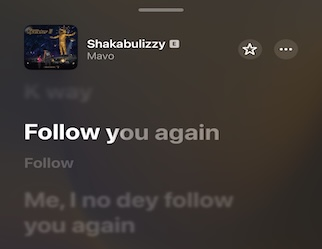

Follow you again.

"Follow you again. Me I no go follow you again."
One way I’ve learned to deal with social media is to aggressively curate my feeds and optimize for my interests.
I also try my best to filter out negative material and preserve my headspace.
This means that if I repeatedly get a bad vibe from your content, no hard feelings but me I no go follow you again.
Now, a bad vibe doesn’t always mean you did anything wrong. Sometimes it could even just be my own ego, insecurity or envy jumping out, but whatever it is, I won’t entertain it in my personal space.
So if your social media content disrupts or pollutes my headspace, kills my vibe? Me I no go follow you again.
P.S If you like Afrobeats, I listened to this young kid called Mavo so many times over the last few weeks that I made a playlist. More on why on earth I like his music, later.